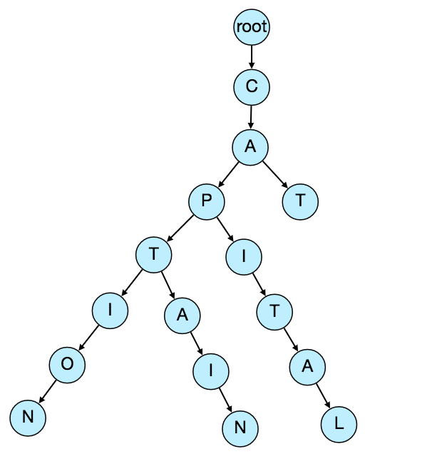
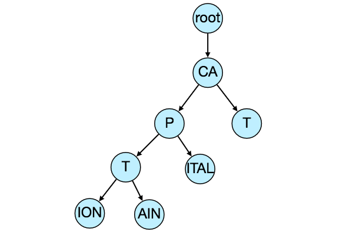
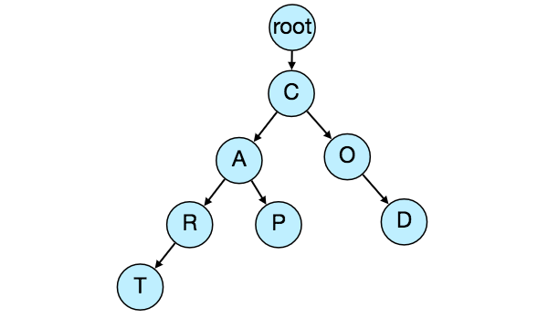

Designing Typeahead Suggestion
Designing a real-time suggestion service that recommends terms to users as they type a search query, served from an in-memory trie within tight latency bounds.
Let's design a real-time suggestion service, which will recommend terms to users as they enter text for searching.
Similar Services: Auto-suggestions, Typeahead search
Difficulty: Medium
Typeahead suggestions enable users to search for known and frequently searched terms. As the user types into the search box, it tries to predict the query based on the characters the user has entered and gives a list of suggestion to complete the query. Typeahead suggestions help the user to articulate their search queries better. It’s not about speeding up the search process but rather about guiding the users and lending them a helping hand in constructing their search query.
Functional Requirements: As the user types in their query, our service should suggest top 10 terms starting with whatever user has typed.
Non-function Requirements: The suggestions should appear in real-time. The user should be able to see the suggestions within 200ms.
The problem we are solving is that we have a lot of ‘strings’ that we need to store in such a way that users can search on any prefix. Our service will suggest next terms that will match the given prefix. For example, if our database contains following terms: cap, cat, captain, capital; and the user has typed in ‘cap’, our system should suggest ‘cap’, ‘captain’ and ‘capital’.
Since we’ve to serve a lot of queries with minimum latency, we need to come up with a scheme that can efficiently store our data such that it can be queried quickly. We can’t depend upon some database for this; we need to store our index in memory in a highly efficient data structure.
One of the most appropriate data structure that can serve our purpose would be the Trie (pronounced “try”). A trie is a tree-like data structure used to store phrases where each node stores a character of the phrase in a sequential manner. For example, if we need to store ‘cap, cat, caption, captain, capital’ in the trie, it would look like:

Now if the user has typed ‘cap’, our service can traverse the trie to go to the node ‘P’ to find all the terms that start with this prefix (e.g., cap-tion, cap-ital etc).
We can merge nodes that have only one branch to save storage space. The above trie can be stored like this:

Should we’ve case insensitive trie? For simplicity and search use case let’s assume our data is case insensitive.
How to find top suggestion? Now that we can find all the terms given a prefix, how can we know what’re the top 10 terms that we should suggest? One simple solution could be to store the count of searches that terminated at each node, e.g., if users have searched about ‘CAPTAIN’ 100 times and ‘CAPTION’ 500 times, we can store this number with the last character of the phrase. So now if the user has typed ‘CAP’ we know the top most searched word under the prefix ‘CAP’ is ‘CAPTION’. So given a prefix, we can traverse the sub-tree under it, to find the top suggestions.
Given a prefix, how much time it can take to traverse its sub-tree? Given the amount of data we need to index, we should expect a huge tree. Even, traversing a sub-tree would take really long, e.g., the phrase ‘system design questions’ is 30 levels deep. Since we’ve very tight latency requirements, we do need to improve the efficiency of our solution.
Can we store top suggestions with each node? This can surely speed up our searches but will require a lot of extra storage. We can store top 10 suggestions at each node that we can return to the user. We’ve to bear the big increase in our storage capacity to achieve the required efficiency.
We can optimize our storage by storing only references of the terminal nodes rather than storing the entire phrase. To find the suggested term we’ve to traverse back using the parent reference from the terminal node. We will also need to store the frequency with each reference to keep track of top suggestions.
How would we build this trie? We can efficiently build our trie bottom up. Each parent node will recursively call all the child nodes to calculate their top suggestions and their counts. Parent nodes will combine top suggestions from all of their children to determine their top suggestions.
How to update the trie? Assumeing five billion searches every day, which would give us approximately 60K queries per second. If we try to update our trie for every query it’ll be extremely resource intensive and this can hamper our read requests too. One solution to handle this could be to update our trie offline after a certain interval.
As the new queries come in, we can log them and also track their frequencies. Either we can log every query or do sampling and log every 1000th query. For example, if we don’t want to show a term which is searched for less than 1000 times, it’s safe to log every 1000th searched term.
We can have a Map-Reduce (MR) setup to process all the logging data periodically, say every hour. These MR jobs will calculate frequencies of all searched terms in the past hour. We can then update our trie with this new data. We can take the current snapshot of the trie and update it with all the new terms and their frequencies. We should do this offline, as we don’t want our read queries to be blocked by update trie requests. We can have two options:
- We can make a copy of the trie on each server to update it offline. Once done we can switch to start using it and discard the old one.
- Another option is we can have a master-slave configuration for each trie server. We can update slave while the master is serving traffic. Once the update is complete, we can make the slave our new master. We can later update our old master, which can then start serving traffic too.
How can we update the frequencies of typeahead suggestions? Since we are storing frequencies of our typeahead suggestions with each node, we need to update them too. We can update only difference in frequencies rather than recounting all search terms from scratch. If we’re keeping count of all the terms searched in last 10 days, we’ll need to subtract the counts from the time period no longer included and add the counts for the new time period being included. We can add and subtract frequencies based on Exponential Moving Average (EMA) of each term. In EMA, we give more weight to the latest data. It’s also known as the exponentially weighted moving average.
After inserting a new term in the trie, we’ll go to the terminal node of the phrase and increase its frequency. Since we’re storing the top 10 queries in each node, it is possible that this particular search term jumped into the top 10 queries of a few other nodes. So, we need to update the top 10 queries of those nodes then. We’ve to traverse back from the node to all the way up to the root. For every parent, we check if the current query is part of the top 10. If so, we update the corresponding frequency. If not, we check if the current query’s frequency is high enough to be a part of the top 10. If so, we insert this new term and remove the term with the lowest frequency.
How can we remove a term from the trie? Let’s say we’ve to remove a term from the trie, because of some legal issue or hate or piracy etc. We can completely remove such terms from the trie when the regular update happens, meanwhile, we can add a filtering layer on each server, which will remove any such term before sending them to users.
What could be different ranking criteria for suggestions? In addition to a simple count, for terms ranking, we have to consider other factors too, e.g., freshness, user location, language, demographics, personal history etc.
How to store trie in a file so that we can rebuild our trie easily - this will be needed when a machine restarts? We can take snapshot of our trie periodically and store it in a file. This will enable us to rebuild a trie if the server goes down. To store, we can start with the root node and save the trie level-by-level. With each node we can store what character it contains and how many children it has. Right after each node we should put all of its children. Let’s assume we have following trie:

If we store this trie in a file with the above-mentioned scheme, we will have: “C2,A2,R1,T,P,O1,D”. From this, we can easily rebuild our trie.
If you’ve noticed we are not storing top suggestions and their counts with each node, it is hard to store this information, as our trie is being stored top down, we don’t have child nodes created before the parent, so there is no easy way to store their references. For this, we have to recalculate all the top terms with counts. This can be done while we are building the trie. Each node will calculate its top suggestions and pass it to its parent. Each parent node will merge results from all of its children to figure out its top suggestions.
If we are building a service, which has the same scale as that of Google, we can expect 5 billion searches every day, which would give us approximately 60K queries per second.
Since there will be a lot of duplicates in 5 billion queries, we can assume that only 20% of these will be unique. If we only want to index top 50% of the search terms, we can get rid of a lot of less frequently searched queries. Let’s assume we will have 100 million unique terms for which we want to build an index.
Storage Estimation: If on the average each query consists of 3 words, and if the average length of a word is 5 characters, this will give us 15 characters of average query size. Assuming we need 2 bytes to store a character, we will need 30 bytes to store an average query. So total storage we will need:
100 million * 30 bytes => 3 GB
We can expect some growth in this data every day, but we should also be removing some terms that are not searched anymore. If we assume we have 2% new queries every day and if we are maintaining our index for last one year, total storage we should expect:
3GB + (0.02 * 3 GB * 365 days) => 25 GB
Although our index can easily fit on one server, we can still partition it in order to meet our requirements of higher efficiency and lower latencies. How can we efficiently partition our data to distribute it onto multiple servers?
a. Range Based Partitioning: What if we store our phrases in separate partitions based on their first letter. So we save all the terms starting with letter ‘A’ in one partition and those that start with letter ‘B’ into another partition and so on. We can even combine certain less frequently occurring letters into one database partition. We should come up with this partitioning scheme statically so that we can always store and search terms in a predictable manner.
The main problem with this approach is that it can lead to unbalanced servers, for instance; if we decide to put all terms starting with letter ‘E’ into a DB partition, but later we realize that we have too many terms that start with letter ‘E’, which we can’t fit into one DB partition.
We can see that the above problem will happen with every statically defined scheme. It is not possible to calculate if each of our partitions will fit on one server statically.
b. Partition based on the maximum capacity of the server: Let’s say we partition our trie based on the maximum memory capacity of the servers. We can keep storing data on a server as long as it has memory available. Whenever a sub-tree cannot fit into a server, we break our partition there to assign that range to this server and move on the next server to repeat this process. Let’s say, if our first trie server can store all terms from ‘A’ to ‘AABC’, which mean our next server will store from ‘AABD’ onwards. If our second server could store up to ‘BXA’, next serve will start from ‘BXB’ and so on. We can keep a hash table to quickly access this partitioning scheme:
Server 1, A-AABC
Server 2, AABD-BXA
Server 3, BXB-CDA
For querying, if the user has typed ‘A’ we have to query both server 1 and 2 to find the top suggestions. When the user has typed ‘AA’, still we have to query server 1 and 2, but when the user has typed ‘AAA’ we only need to query server 1.
We can have a load balancer in front of our trie servers, which can store this mapping and redirect traffic. Also if we are querying from multiple servers, either we need to merge the results at the server side to calculate overall top results, or make our clients do that. If we prefer to do this on the server side, we need to introduce another layer of servers between load balancers and trie servers, let’s call them aggregator. These servers will aggregate results from multiple trie servers and return the top results to the client.
Partitioning based on the maximum capacity can still lead us to hotspots e.g., if there are a lot of queries for terms starting with ‘cap’, the server holding it will have a high load compared to others.
c. Partition based on the hash of the term: Each term will be passed to a hash function, which will generate a server number and we will store the term on that server. This will make our term distribution random and hence minimizing hotspots. To find typeahead suggestions for a term, we have to ask all servers and then aggregate the results. We have to use consistent hashing for fault tolerance and load distribution.
We should realize that caching the top searched terms will be extremely helpful in our service. There will be a small percentage of queries that will be responsible for most of the traffic. We can have separate cache servers in front of the trie servers, holding most frequently searched terms and their typeahead suggestions. Application servers should check these cache servers before hitting the trie servers to see if they have the desired searched terms.
We can also build a simple Machine Learning (ML) model that can try to predict the engagement on each suggestion based on simple counting, personalization, or trending data etc., and cache these terms.
We should have replicas for our trie servers both for load balancing and also for fault tolerance. We also need a load balancer that keeps track of our data partitioning scheme and redirects traffic based on the prefixes.
What will happen when a trie server goes down? As discussed above we can have a master-slave configuration, if the master dies slave can take over after failover. Any server that comes back up, can rebuild the trie based on the last snapshot.
We can perform the following optimizations on the client to improve user’s experience:
- The client should only try hitting the server if the user has not pressed any key for 50ms.
- If the user is constantly typing, the client can cancel the in-progress requests.
- Initially, the client can wait until the user enters a couple of characters.
- Clients can pre-fetch some data from the server to save future requests.
- Clients can store the recent history of suggestions locally. Recent history has a very high rate of being reused.
- Establishing an early connection with server turns out to be one of the most important factors. As soon as the user opens the search engine website, the client can open a connection with the server. So when user types in the first character, client doesn’t waste time in establishing the connection.
- The server can push some part of their cache to CDNs and Internet Service Providers (ISPs) for efficiency.
Users will receive some typeahead suggestions based on their historical searches, location, language, etc. We can store the personal history of each user separately on the server and cache them on the client too. The server can add these personalized terms in the final set, before sending it to the user. Personalized searches should always come before others.